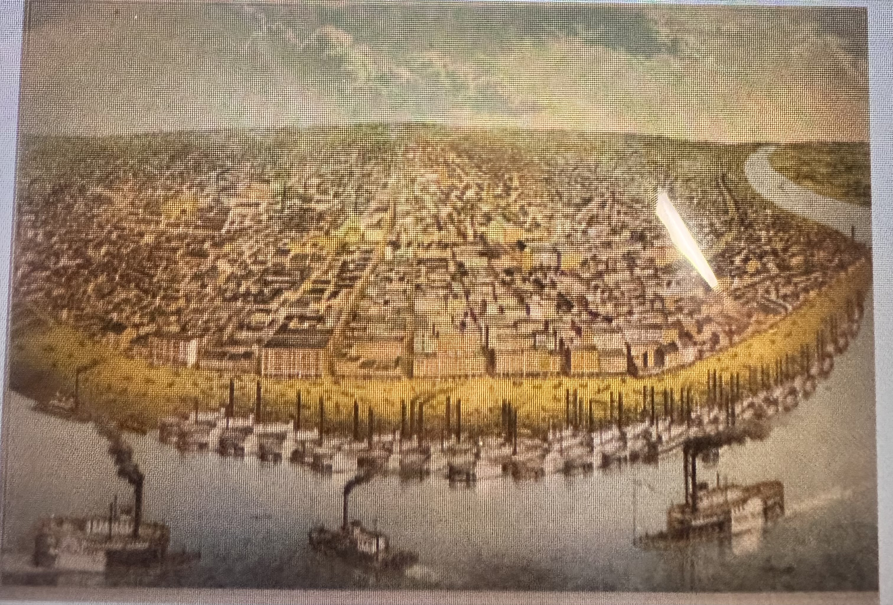
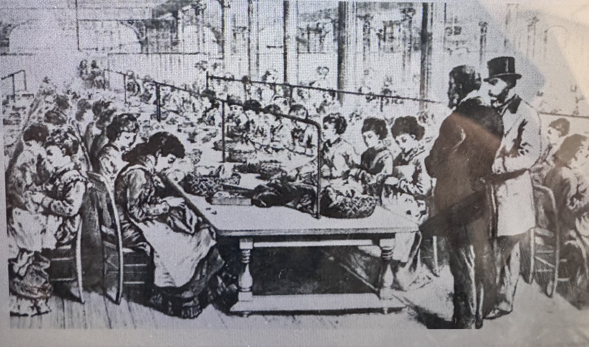

Good Impact and Effects
There were many ways that the Market Revolution has impacted and effectively benefited America. The good impacts that were affected were creating more factories for more jobs, new faster ways of transportation, cities and towns grew, often cheaper products, inventions, and economic growth.
The market revolution made businesses grow and people who stayed home doing nothing had the opportunity to earn money. This market based economy has made it easier to produce, sell goods, and move things around.

Negative Impacts and Effects

With good outcomes of the market revolution there were some negative effects and impacts. When working in factories the people faced poor working conditions where they worked for long hours and low pay. Children had to work in the crueling factories too. Some farmers also had difficulty competing with large businesses as engineering changed and new money making processes.
Slavery also expanded in the south because of its rapid increase of cotton production and demand. Where there were more enslaved people especially native americans from the Indian Removal Act of 1830 used for the production of cotton. The inequality of women and men where they were treated differently. And growing economic inequality, where business owners and rich people gained more profit than many poor workers. Even though the economy grew, there were many workers who had to endure bad conditions.